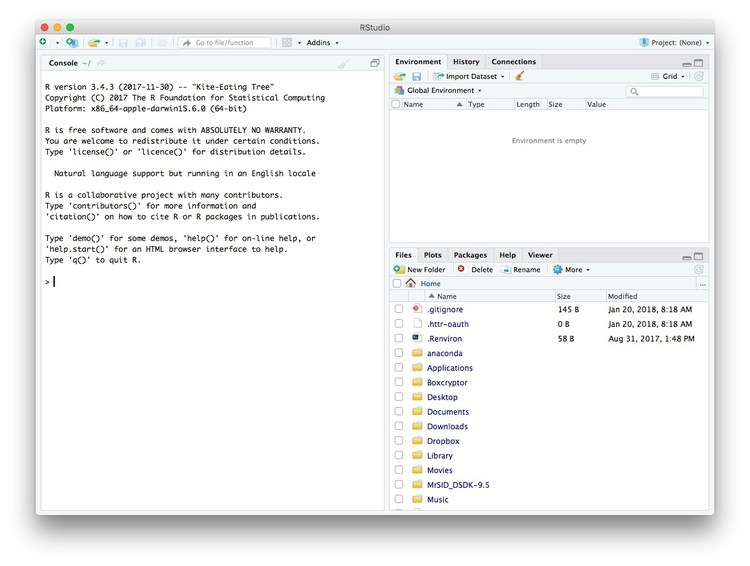
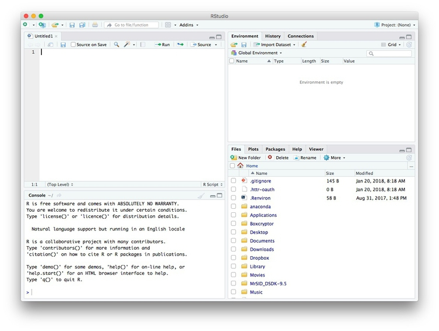
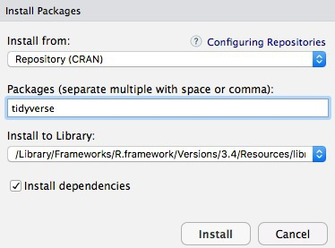
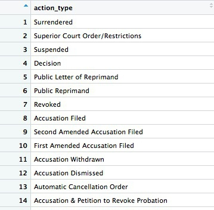
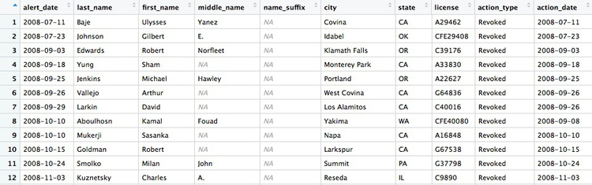
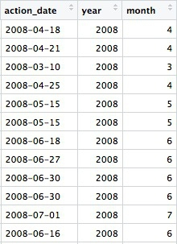
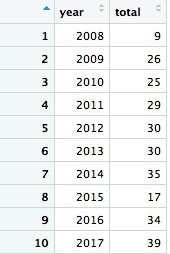
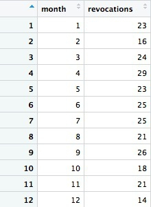
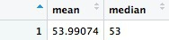
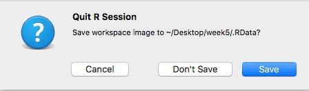

R, RStudio, and the tidyverse
Introducing R and RStudio
In today’s class we will work with R, which is a very powerful tool, designed by statisticians for data analysis. Described on its website as “free software environment for statistical computing and graphics,” R is a programming language that opens a world of possibilities for making graphics and analyzing and processing data. Indeed, just about anything you may want to do with data can be done with R, from web scraping to making interactive graphics.
RStudio is an “integrated development environment,” or IDE, for R that provides a user-friendly interface.
Launch RStudio, and the screen should look like this:

The main panel to the left is the R Console. Type valid R code into here, hit return, and it will be run. See what happens if you run:
print("Hello World!")
The data we will use
Download the data for this class from here, unzip the folder and place it on your desktop. We will use this data over the next two weeks. It contains the following files:
ca_discipline.csvDisciplinary alerts and actions issued by the Medical Board of California from 2008 to 2017. Processed from downloads available here. Contains the following variables:alert_dateDate alert issued.last_nameLast name of doctor/health care provider.first_nameFirst name of doctor/health care provider.middle_nameMiddle/other names.name_suffixName suffix (Jr., II etc)cityCity of practive location.stateState of practice location.licenseCalifornia medical license number.action_typeType of action.action_dateDate of action.
ca_medicare_opioids.csvData on prescriptions of opioid drugs under the Medicare Part D Prescription Drug Program by doctors in California, from 2013 to 2015. Filtered from the national data downloads available here. This is the public release of the data that ProPublica used FOIA to obtain for earlier years for the story we discussed in Week 2. Contains the following variables:npiNational Provider Identifier (NPI) for the doctor/organization making the claim. This is a unique code for each health care provider.nppes_provider_last_org_nameFor individual doctors, their last name. For organizations, the organziation name.nppes_provider_first_nameFirst name for indivisual doctors, blank for organizations.nppes_provider_cityCity where the provider is located.nppes_provider_stateState where the provider is located; “CA” for all of these records.specialty_descriptionProvider’s medical speciality, reported on their medicare claims. For providers that have more than one Medicare specialty code reported on their claims, the code associated with the largest number of services.description_flagSource of thespecialty_description.SMedicare Specialty Code description.TTaxonomy Code Classification description.
drug_nameIncludes both brand names (drugs that have a trademarked name) and generic names (drugs that do not have a trademarked name).generic_nameThe chemical ingredient of a drug rather than the trademarked brand name under which the drug is sold.bene_countTotal number of unique Medicare Part D beneficiaries (i.e. patients) with at least one claim for the drug. Counts fewer than 11 are suppressed and are indicated by a blank.total_claim_countNumber of Medicare Part D claims; includes original prescriptions and refills. If less than 11, counts are not included in the data file.total_30_day_fill_countTotal number of Medicare Part D standardized 30-day fills. The standardized 30-day fill is derived from the number of days supplied on each Part D claim divided by 30.total_day_supplyTotal number of days’ supply for this drug.total_drug_costTotal cost paid for all associated claims; includes ingredient cost, dispensing fee, sales tax, and any applicable fees.bene_count_ge65Total number of unique Medicare Part D beneficiaries age 65 and older with at least one claim for the drug. A blank indicates the value is suppressed.bene_count_ge65_suppress_flagWhy thebene_count_ge65variable is suppressed:*Suppressed due tobene_count_ge65between 1 and 10.#Suppressed because the “less than 65 year old” group (not displayed) contains a beneficiary count between 1 and 10.total_claim_count_ge65Number of Medicare Part D claims for beneficiaries age 65 and older; includes original prescriptions and refills. A blank indicates the value is suppressed.ge65_suppress_flagWhy thetotal_claim_count_ge65,total_30_day_fill_count ge65,total_day_supply_ge65, andtotal_drug_cost_ge65 variablesare suppressed:*Suppressed due tototal_claim_count_ge65between 1 and 10.
#Suppressed because the “less than 65 year old” group (not displayed)
contains a claim count between 1 and 1.
total_30_day_fill_count_ge65Number of Medicare Part D standardized 30-day fills for beneficiaries age 65 and older. Iftotal_claim_count_ge65is suppressed, this variable is also suppressed.total_day_supply_ge65Total days’ supply for which this drug was dispensed, for beneficiaries age 65 and older. Iftotal_claim_count_ge65is suppressed, this variable is also suppressed.total_drug_cost_ge65Total drug cost paid for all associated claims for beneficiaries age 65 and older. Iftotal_claim_count_ge65is suppressed, this is also suppressed.year2013, 2014, or 2015.
npi_license.csvCrosswalk file to join NPI identifiers to state license numbers, processed from the download available here to include license numbers potentially matching California doctors. This will provide one way of joining the precription data to the medical board disciplinary data. As we shall see, problems with the data mean that it is not infallible. Contains the following variables:npiNational Provider Identifier, as described above.plicnumState license number, from the original file.licenseProcessed frompclicnumto conform to the format of California medical license numbers.
Some words of caution, before we start
The US is currently in the grip of an epidemic of opioid abuse and addiction. Although widespread medical prescription of opioids helped drive addiction, a majority of overdoses now occur through the consumption of drugs purchased illegally.
Opioids have important medical uses, and just because a doctor prescribes large amounts of the drugs doesn’t necessarily mean they are practising irresponsibly. Turning any of the analyses in the next two classes into stories would require a lot of additional reporting, beyond the data work.
As ProPublica explained, in the methods for its stories based on Medicare Part D prescription data:
The data could not tell us everything. We interviewed many high-volume prescribers to better understand their patients and their practices. Some told us their numbers were high because they were credited with prescriptions by others working in the same practice. In addition, providers who primarily work in long-term care facilities or busy clinics with many patients naturally may write more prescriptions.
Reproducibility: Save your scripts
Data journalism should ideally be fully documented and reproducible. R makes this easy, as every operation performed can be saved in a script, and repeated by running that script. Click on the icon at top left and select R Script. A new panel should now open:

Any code we type in here can be run in the console. Hitting Run will run the line of code on which the cursor is sitting. To run multiple lines of code, highlight them and click Run.
Click on the save/disk icon in the script panel and save the blank script to the file on your desktop with the data for this week, calling it week5.R.
Set your working directory
Now we can set the working directory to this folder by selecting from the top menu Session>Set Working Directory>To Source File Location. (Doing so means we can load the files in this directory without having to refer to the full path for their location, and anything we save will be written to this folder.)
Notice how this code appears in the console:
setwd("~/Desktop/week5")
Save your data
The panel at top right has three tabs, the first showing the Environment, or all of the “objects” loaded into memory for this R session. Save this as well, and you won’t have to load and process all of the data again if you return to return to a project later.
Click on the save/disk icon in the Environment panel to save the file as week5.RData. The following code should appear in the Console:
save.image("~/Desktop/week5/week5.RData")
Copy this code into your script, placing it at the end, with a comment, explaining what it does:
# save session data
save.image("~/Desktop//week5/week5.RData")
Now if you run your entire script, the last action will always be to save the data in your environment.
Comment your code
Anything that appears on a line after # will be treated as a comment, and will be ignored when the code is run. You can use this to explain what the code does. Get into the habit of commenting your code: Don’t trust yourself to remember!
Some R code basics
<-is known as an “assignment operator.” It means: “Make the object named to the left equal to the output of the code to the right.”&means AND, in Boolean logic.|means OR, in Boolean logic.!means NOT, in Boolean logic.- When referring to values entered as text, or to dates, put them in quote marks, like this:
"United States", or"2016-07-26". Numbers are not quoted. - When entering two or more values as a list, combine them using the function
c, for combine, with the values separated by commas, for example:c("2017-07-26","2017-08-04") - As in a spreadsheet, you can specify a range of values with a colon, for example:
c(1:10)creates a list of integers (whole numbers) from one to ten. Some common operators:
+-add, subtract.*/multiply, divide.><greater than, less than.>=<=greater than or equal to, less than or equal to.!=not equal to.
Equals signs can be a little confusing, but see how they are used in the code we use today:
==test whether an object is equal to a value. This is often used when filtering data, as we will see.=make an object equal to a value; similar to<-, but used within a function (see below).
Handling null values:
- Nulls are designated as
NA. is.na(x)looks for nulls within variablex.!is.na(x)looks for non-null values within variablex.
- Nulls are designated as
Here, is.na is a function. Functions are followed by parentheses, and act on the data/code in the parentheses.
Important: Object and variable names in R should not contain spaces.
Introducing R packages and the tidyverse
Much of the power of R comes from the thousands of “packages” written by its community of open source contributors. These are optimized for specific statistical, graphical or data-processing tasks. To see what packages are available in the basic distribution of R, select the Packages tab in the panel at bottom right. To find packages for particular tasks, try searching Google using appropriate keywords and the phrase “R package.”
Our goal for today’s class is to get used to processing and analyzing data using a powerful series of R packages known as the tidyverse.
The tidyverse was pioneered by Hadley Wickham, chief scientist at RStudio, but now has many contributors.
Today, we will start by using:
- readr Reads and writes CSV and other text files.
- dplyr Processes and analyzes data, using the operations we discussed in the first class.
- lubridate Makes working with dates and times much easier.
To install a package, click on the Install icon in the Packages tab, type its name into the dialog box, and make sure that Install dependencies is checked, as some packages will only run correctly if other packages are also installed. The tidyverse packages can be installed in one go. Click Install and all of the required packages should install:

Notice that the following code appears in the console:
install.packages("tidyverse")
So you can also install packages with code in this format, without using the point-and-click interface.
Each time you start R, it’s a good idea to click on Update in the Packages panel to update all your installed packages to the latest versions.
Installing a package makes it available to you, but to use it in any R session you need to load it. You can do this by checking its box in the Packages panel. However, we will enter the following code into our script, then highlight these lines of code and run them:
# load packages to read and write csv files, process data, and work with dates
library(readr)
library(dplyr)
library(lubridate)
At this point, and at regular intervals, save your script, by clicking the save/disk icon in the script panel, or using the ⌘-S keyboard shortcut.
Load and view data
Load data
You can load data into the current R session by selecting Import Dataset>From Text File... in the Environment tab.
However, we will use the read_csv function from the readr package. Copy the following code into your script and Run:
# load ca medical board disciplinary actions data
ca_discipline <- read_csv("ca_discipline.csv")
Notice that the Environment now contains an objects of the type tbl_df, a variety of the standard R object for holding tables of data, known as a data frame:
Examine the data
We can View data at any time by clicking on its table icon in the Environment tab in the Grid view. The following code has the same effect:
View(ca_discipline)
The glimpse function from dplyr will tell you more about the variables in your data, including their data type. Copy this code into your script and Run:
# view structure of data
glimpse(ca_discipline)
This should give the following output in the R Console:
Variables: 10
$ alert_date <date> 2008-04-18, 2008-04-21, 2008-04-23, 2008-04-28, 2008-05-15, 2008-05-15, 2008-06-18, 2008-06-27, 2008...
$ last_name <chr> "Boyajian", "Cragen", "Chow", "Gravich", "Kabacy", "Aboulhosn", "Harron", "Fitzpatrick", "Adrian", "M...
$ first_name <chr> "John", "Richard", "Hubert", "Anna", "George", "Kamal", "Raymond", "Christian", "Adrian", "Pamela", "...
$ middle_name <chr> "Arthur", "Darin", "Wing", NA, "E.", "Fouad", "A.", "John", NA, "J.", "Quoc", "M.", "Elisabet", NA, "...
$ name_suffix <chr> NA, NA, NA, NA, NA, NA, NA, NA, NA, NA, NA, NA, NA, NA, NA, NA, NA, NA, NA, NA, NA, NA, NA, NA, NA, N...
$ city <chr> "Boise", "Temecula", "San Gabriel", "Los Angeles", "Lacey", "Yakima", "Bridgeport", "Las Vegas", "Las...
$ state <chr> "ID", "CA", "CA", "CA", "WA", "WA", "WV", "NM", "NV", "CA", "CA", "CA", "CA", "CA", "CA", "TN", "CA",...
$ license <chr> "A25855", "A54872", "G45435", "A40805", "G13766", "CFE40080", "G8415", "G47520", "AFE56237", "G85601"...
$ action_type <chr> "Surrendered", "Surrendered", "Superior Court Order/Restrictions", "Superior Court Order/Restrictions...
$ action_date <date> 2008-04-18, 2008-04-21, 2008-03-10, 2008-04-25, 2008-05-15, 2008-05-15, 2008-06-18, 2008-06-27, 2008...
chr means “character,” or a string of text (which can also be treated as a categorical variable); date means a date. While we don’t have these data types here, int means an integer, or whole number; dbl means a number that may include decimal fractions; and POSIXct means a full date and timestamp.
If you run into any trouble importing data with readr, you may need to specify the data types for some columns — in particular for date and time. This link explains how to set data types for individual variables when importing data with readr.
To specify an individual column use the name of the data frame and the column name, separated by $. Type this into your script and run:
# print values for alert_date in the ca_discipline data
print(ca_discipline$alert_date)
The output will be the first 1,000 values for that variable.
If you need to change the data type for any variable, use the following functions:
as.characterconverts to a text string.as.numericconverts to a number that may include decimal fractions (dbl).as.factorconverts to a categorical variable.as.integerconverts to an integeras.Dateconverts to a dateas.POSIXctconverts to a full date and timestamp.
So this code will convert alert_date codes to text:
# convert alert_date to text
ca_discipline$alert_date <- as.character(ca_discipline$alert_date)
glimpse(ca_discipline)
Notice that the data type for alert_date has now changed:
Observations: 7,561
Variables: 10
$ alert_date <chr> "2008-04-18", "2008-04-21", "2008-04-23", "2008-04-28", "2008-05-15", "2008-05-15", "2008-06-18", "20...
$ last_name <chr> "Boyajian", "Cragen", "Chow", "Gravich", "Kabacy", "Aboulhosn", "Harron", "Fitzpatrick", "Adrian", "M...
$ first_name <chr> "John", "Richard", "Hubert", "Anna", "George", "Kamal", "Raymond", "Christian", "Adrian", "Pamela", "...
$ middle_name <chr> "Arthur", "Darin", "Wing", NA, "E.", "Fouad", "A.", "John", NA, "J.", "Quoc", "M.", "Elisabet", NA, "...
$ name_suffix <chr> NA, NA, NA, NA, NA, NA, NA, NA, NA, NA, NA, NA, NA, NA, NA, NA, NA, NA, NA, NA, NA, NA, NA, NA, NA, N...
$ city <chr> "Boise", "Temecula", "San Gabriel", "Los Angeles", "Lacey", "Yakima", "Bridgeport", "Las Vegas", "Las...
$ state <chr> "ID", "CA", "CA", "CA", "WA", "WA", "WV", "NM", "NV", "CA", "CA", "CA", "CA", "CA", "CA", "TN", "CA",...
$ license <chr> "A25855", "A54872", "G45435", "A40805", "G13766", "CFE40080", "G8415", "G47520", "AFE56237", "G85601"...
$ action_type <chr> "Surrendered", "Surrendered", "Superior Court Order/Restrictions", "Superior Court Order/Restrictions...
$ action_date <date> 2008-04-18, 2008-04-21, 2008-03-10, 2008-04-25, 2008-05-15, 2008-05-15, 2008-06-18, 2008-06-27, 2008...
Process and analyze data with dplyr
Now we will use dplyr to process the data, using the basic operations we discussed in week 1:
Sort: Largest to smallest, oldest to newest, alphabetical etc.
Filter: Select a defined subset of the data.
Summarize/Aggregate: Deriving one value from a series of other values to produce a summary statistic. Examples include: count, sum, mean, median, maximum, minimum etc. Often you’ll group data into categories first, and then aggregate by group.
Join: Merging entries from two or more datasets based on common field(s), e.g. unique ID number, last name and first name.
Here are some of the most useful functions in dplyr:
selectChoose which columns to include.filterFilter the data.arrangeSort the data, by size for continuous variables, by date, or alphabetically.group_byGroup the data by a categorical variable.summarizeSummarize, or aggregate (for each group if followinggroup_by). Often used in conjunction with functions including:mean(x)Calculate the mean, or average, for variablex.median(x)Calculate the median.max(x)Find the maximum value.min(x)Find the minimum value.sum(x)Add all the values together.n()Count the number of records. Here there isn’t a variable in the brackets of the function, because the number of records applies to all variables.n_distinct(x) Count the number of unique values in variablex.
mutateCreate new column(s) in the data, or change existing column(s).renameRename column(s).bind_rowsMerge two data frames into one, combining data from columns with the same name.
There are also various functions to join data, which we will explore next week.
These functions can be chained together using the “pipe” operator %>%, which makes the output of one line of code the input for the next. This allows you to run through a series of operations in a logical order. I find it helpful to think of %>% as meaning “then.”
Now we will use dplyr to turn the alert_date variable back to dates:
# convert alert_date to date using dplyr
ca_discipline <- ca_discipline %>%
mutate(alert_date = as.Date(alert_date))
This code copies the ca_discipline data frame, and then (%>%) uses dplyr‘s mutate function to change the data type for the alert_date variable. Because the copied data frame has the same name, it overwrites the original version.
Filter and sort data
To get used to working with dplyr, we will now start filtering and sorting the data according to the doctors’ locations, and the types of disciplinary actions they faced.
First, let’s look at the types of disciplinary actions in the data:
# look at types of disciplinary actions
types <- ca_discipline %>%
select(action_type) %>%
unique()
This code first copies the ca_disciplinary data frame into a new object called types. Then (%>%) it selects the action_type variable only. Finally, it uses a function called unique to display the unique values in that variable, with no duplicates.
The new data frame has one column and 75 rows. If you View, the first few rows should look like this:

Many of the values for action_types seem to be subtle variations of the same thing. If we were going to all analyze the types in detail, we may need to group some of these together, after speaking to an expert to understand what they all mean. But some of the action types are clear and unambiguous: Revoked is the medical board’s most severe sanction, which cancels a doctor’s license to practise. So let’s first filter the data to look at those actions:
# filter for license revocations only
revoked <- ca_discipline %>%
filter(action_type == "Revoked")
This code copies the ca_discipline data into a new data frame called revoked and then (%>%) uses the filter function to include only actions in which a doctor’s license was revoked. Notice the use of == to test whether action_type is Revoked.
There should be 446 rows in the filtered data, and the first few should look like this:

Some of the doctors are not actually based in California. Doctors can be licensed to practise in more than one state, and the Medical Board of California typically issues its own sanction if a doctor is disciplined in their home state. So let’s now filter the data to look only at doctors with revoked licenses who were based in California, and sort them by city.
# filter for license revocations by doctors based in California, and sort by city
revoked_ca <- ca_discipline %>%
filter(action_type == "Revoked"
& state == "CA") %>%
arrange(city)
Here, the filter combines two conditions with &. That means that both have to be met for the data to be included. Then arrange sorts the data, which for a text variable will be in alphabetical order. If you wanted to sort in reverse alphabetical order, the code would be: (arrange(desc(city)).
There should be 274 rows in the filtered data, and the first few should look like this:
This code will achieve the same result. You should be able to work out why:
# filter for license revocations by doctors based in California, and sort by city
revoked_ca <- revoked %>%
filter(state == "CA") %>%
arrange(city)
Now let’s filter for doctors based in Berkeley or Oakland who have had their licenses revoked:
# doctors in Berkeley or Oakland who have had their licenses revoked
revoked_oak_berk <- ca_discipline %>%
filter(action_type == "Revoked"
& (city == "Oakland" | city == "Berkeley"))
There should be just two doctors:
This code uses | to look for doctors in either Oakland or Berkeley. That part of the filter function is wrapped in parantheses to ensure that it is carried out first.
See what happens if you remove those parentheses, and work out why the result has changed. We will discuss this in class.
Append data using bind_rows
To demonstrate the bind_rows function, we will filter for doctors with revoked licenses in each of the two cities separately, and then append one data frame to the other.
# doctors in Berkeley who had their licenses revoked
revoked_berk <- ca_discipline %>%
filter(action_type == "Revoked"
& city == "Berkeley")
# doctors in Oakland who had their licenses revoked
revoked_oak <- ca_discipline %>%
filter(action_type == "Revoked"
& city == "Oakland")
# doctors in Berkeley or Oakland who have had their licenses revoked
revoked_oak_berk <- bind_rows(revoked_oak, revoked_berk)
In-class practice with filtering and sorting
Filter the
ca_disciplinedata to show licensesRevokedfor doctors based in Los Angeles. Sort the result in reverse date order, most recent first.Filter the data to show licenses
SuspendedorRevokedfor doctors in Los Angeles or San Diego. Sort the result in alphabetical order of the doctors’ names, first by last name, then by first name, then by middle name(s). (Hint: You can sort by multiple variables by separating them with a comma.)
Write data to a CSV file
The readr package can also be used to write data from your environment into a CSV file:
# write data to CSV file
write_csv(revoked_oak_berk, "revoked_oak_berk.csv", na = "")
The code na = "" ensures that null values in the data are written as blank cells; otherwise they would contain the letters NA.
Group and summarize data
Next we will group and summarize data by counting disciplinary actions by year and by month. But before doing that, we need to use the lubridate package to extract the year and month from action_date.
# extract year and month from action_date
ca_discipline <- ca_discipline %>%
mutate(year = year(action_date),
month = month(action_date))
Now we have two extra columns in the data, giving the year and the month as a number:

The year and month functions are from the lubridate package.
Previously we used dplyr‘s mutate function to modify an existing variable. Here we used it to create new variables. You can create or modify multiple variables in the same mutate function, separating each one by commas. Notice the use of = to make a variable equal to the output of code, within the mutate function.
Now we can calculate the number of license revokations for doctors based in California by year:
# license revokations for doctors based in Califorina, by year
revoked_ca_year <- ca_discipline %>%
filter(action_type == "Revoked"
& state == "CA") %>%
group_by(year) %>%
summarize(revocations = n())
This should be the result:

The code first filters the data, as before, then groups by the new variable year using group_by, then summarizes by counting the number of records for each year using summarize. The last function creates a new variable called revocations from n(), which is a count of the rows in the data for each year.
Looking at this result and the raw ca_discipline data, we only have partial data for 2008. So if we want to count the number of license revocations by month over all the years, we should first filter out the data for 2008, which will otherwise skew the result.
# license revokations for doctors based in Califorina, by month
revoked_ca_month <- ca_discipline %>%
filter(action_type == "Revoked"
& state == "CA"
& year >= 2009) %>%
group_by(month) %>%
summarize(revocations = n())
This should be the result:

Notice how we used >= to filter for data where the year was 2009 or greater. The following code will achieve the same result:
# license revokations for doctors based in Califorina, by month
revoked_ca_month <- ca_discipline %>%
filter(action_type == "Revoked"
& state == "CA"
& year != 2008) %>%
group_by(month) %>%
summarize(revocations = n())
We can group and summarize by more than one variable at a time. The following code counts the number of actions of all types, by month and year. Again, we will first filter out the incomplete data for 2008.
# disciplinary actions for doctors in California by year and month, from 2009 to 2017
actions_year_month <- ca_discipline %>%
filter(state == "CA"
& year >= 2009) %>%
group_by(year, month) %>%
summarize(actions = n()) %>%
arrange(year, month)
The first few rows should look like this:

Notice that both the group_by and arrange functions group and sort the data, respectively, by two variables, separated by commas.
Finally, let’s calculate the mean and median number of disciplinary actions issued per month, over the period 2009 to 2017:
# mean and median actions per month, 2009 to 2017
summary_year_month <- actions_year_month %>%
ungroup() %>%
summarize(mean = mean(actions),
median = median(actions))
This should be the result:

In this code we calculated two summary statistics, mean and median, in the same summarize function, separating each calculation by a comma. First, however, we had to ungroup the grouped actions_year_month data frame.
Think about the similarities and differences between grouping and summarizing data using dplyr and the spreadsheet pivot tables you made in week 3. We will discuss this in class.
In-class practice with filtering, grouping, and summarizing
Calculate the total number of licenses
SuspendedorRevokedfor doctors based in California for each year.Calculate the total number of licences for doctors based in states other than California that were revoked for each year.
Closing down properly
Whenever you exit R, get into the habit of saving your script amd the data in your environment. Then close your script and any data frames open in View. When you close R, select Don't Save at this prompt:

These actions ensure that R Studio will open cleanly, without the remants from a previous session, when you next launch it.
Exercises/assignment
These exercises are designed for you to practice writing code to load, filter, sort, group, and summarize data.
First open the .RData file from class, by clicking this icon (), and navigating to the folder with the data. If you do this, you won’t need to reload the ca_discipline data, and you won’t need to create the variable year in the data, which you will need for the exercises below.
However, if you’d like to practice these things, you are also welcome to start from scratch and include in your script the code that loads the ca_discipline data and creates the year variable.
Now open a new R script, save it into the same folder as your data with the name week5_assigment.R, and set your working directory to this location, as before.
Using the
ca_disciplinedata, count the number of revoked licenses in each city in 2017 only, and sort so that the cities with the most revoked licenses appear first. Hint:filterby year first, thengroup_bycity, thensummarizewith a count (n()), before sorting witharrange.Count the number of actions of any type by city and by year, not including the incomplete data for 2008. Hint: again you need to
filterto remove the data for 2008, but this time you will need togroup_bytwo variables before counting withsummarize.Find the doctor(s) based in California with the largest number of actions of any type in the
ca_disciplinedata. Hint: There is no need tofilterthe data for this one. You will first need togroup_byseveral variables so that you can easily identify the doctors from the data that is returned (think names, location etc). Then you will need tosummarizewith a count, before sorting witharrangeso that the doctors with the most actions on their record are at the top of the data.Write this data to a file called
doctors_all_actions.csv.Load the file
ca_opioid_prescriptions.csvusingread_csvto make a data frame calledca_opioids. Then make a data frame with just one column,generic_drug, showing all the generic drugs in theca_opioidsdata (with no duplicates). Hint: This is very similar to looking for all of the types of actions in theca_disciplinedata, which we did in class. You will need to useselect.
File your R script (week_5_assigment.R) with the code to complete these exercises, and the saved CSV file (doctors_all_actions.csv), via bCourses by Weds Feb 21 at 8.00pm.
Further reading
RStudio Data Wrangling Cheet Sheet
Also introduces the tidyr package, which can manage wide-to-long transformations, and text-to-columns splits, among other data manipulations.
Stack Overflow
For any work involving code, this question-and-answer site is a great resource for when you get stuck, to see how others have solved similar problems. Search the site, or browse R questions